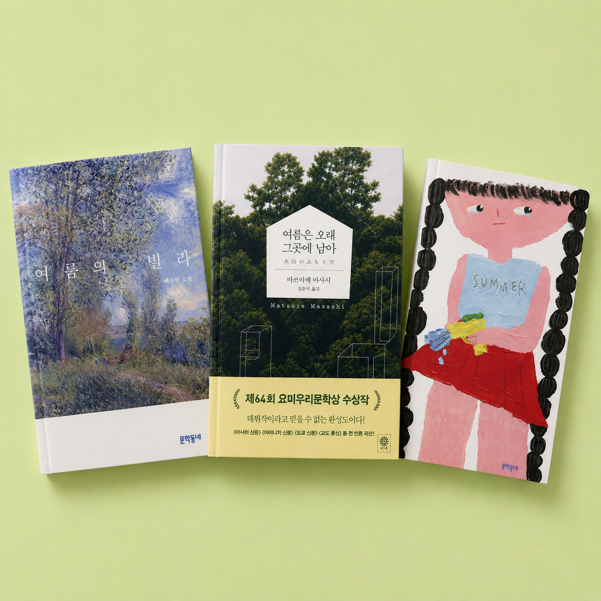
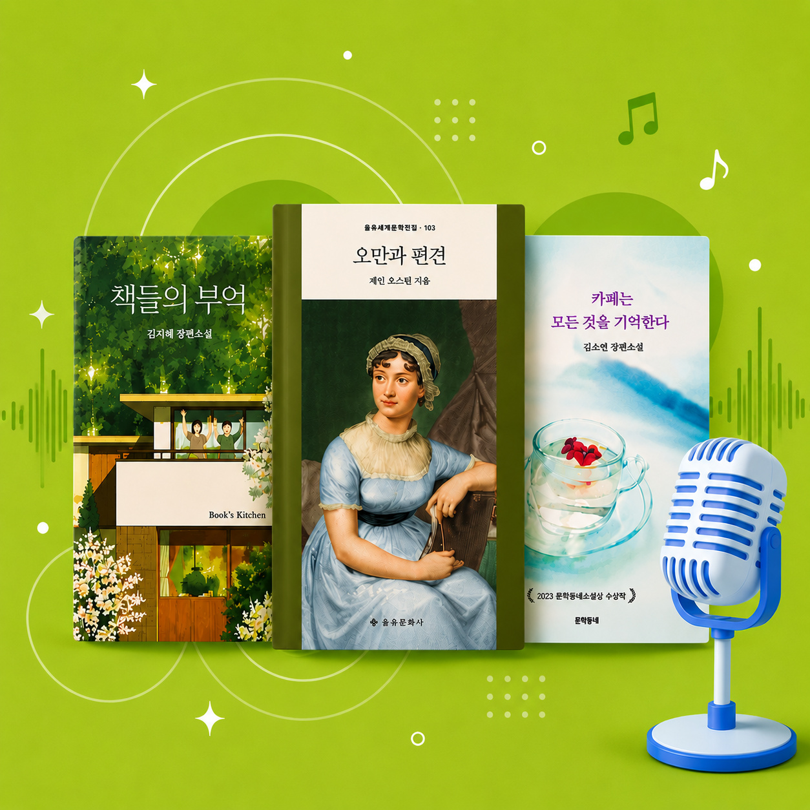
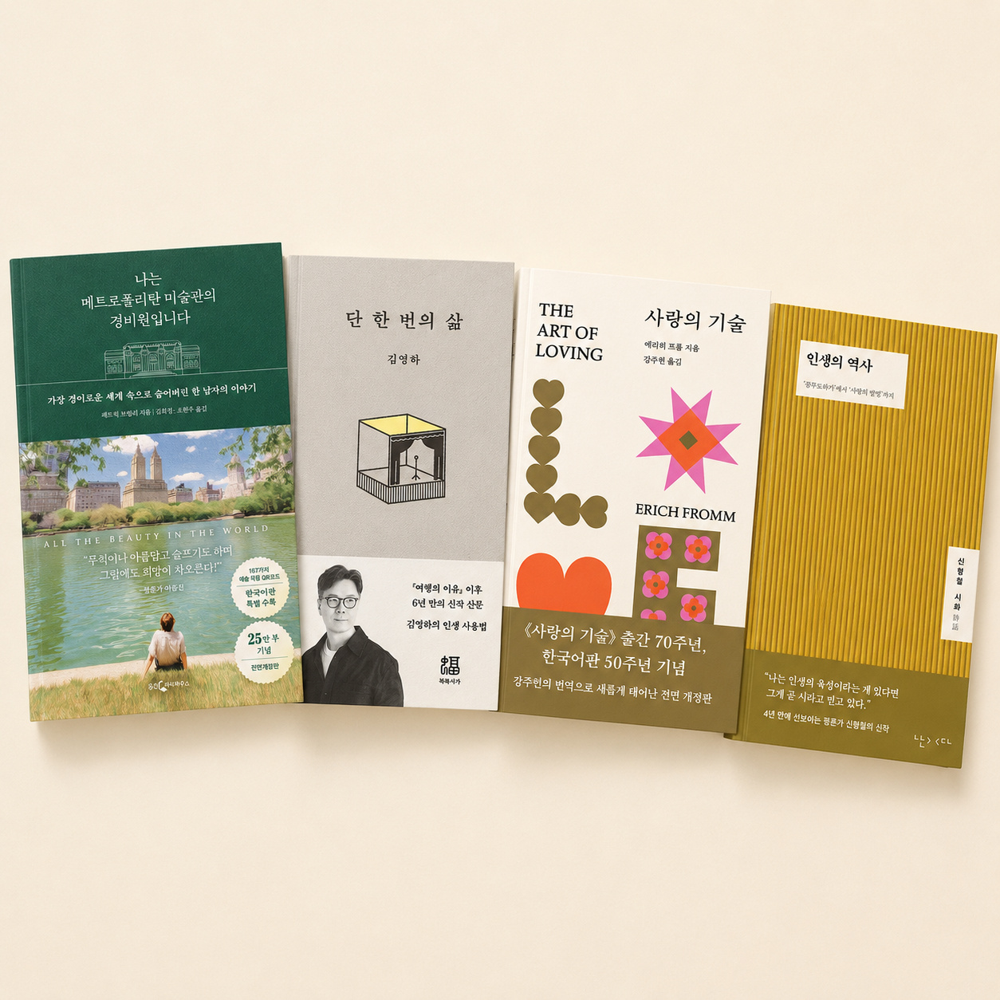
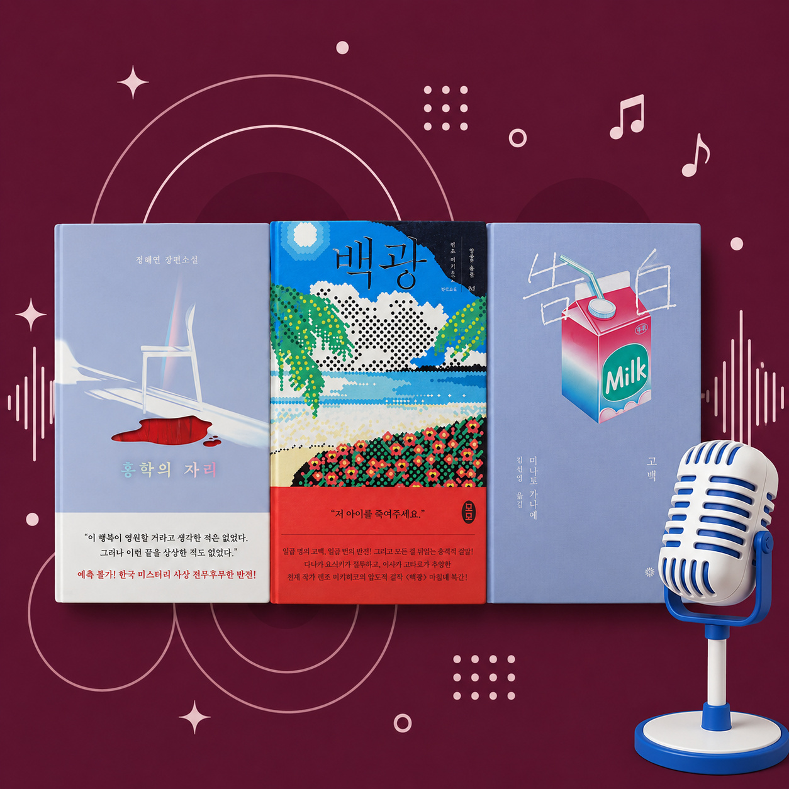

글길 에디터 추천
전체
에디터 픽
오디오 북
지금 읽을 책
총
20
개
에디터 픽
이 책을 읽고 나는 다시 태어났다
오디오 북
판타지 소설에 빠지다. 대작 만날 준비됐나요?
지금 읽을 책
주인공보다 자꾸 눈길 가는 조연들

에디터 픽
여름이 되면 자꾸 마음이 가는 책
오디오 북
고전 로맨스의 맛. 짙은 사랑을 들어보세요.
지금 읽을 책
첫 문장부터 이미 끝난 사랑이었다
에디터 픽
독서모임/교환 독서하기 좋은 책 4권

오디오 북
출근길에 귀로 독서해 보는 건 어때요?
지금 읽을 책
여행은 못 가도 마음은 먼저 떠나볼까요
에디터 픽
에디터 픽 인생의 멘토가 되어주는 책 4권
오디오 북
지친 마음엔 힐링 판타지를
지금 읽을 책
우리의 방과 후를 책임졌던 ‘레전드 만화책들’
에디터 픽
책태기가 왔다고? 극복하는 책 4권
오디오 북
오디오북 초심자를 위한 이달의 오디오북
지금 읽을 책
한 페이지만 읽으려다 밤새게 되는 작가들의 독서 취향

에디터 픽
오늘의 문장을 발견하는 시간
오디오 북
반박 불가 불멸의 명작을 오디오로 듣다
지금 읽을 책
10년 후에도 다시 읽고 싶은 책
에디터 픽
취향이 선명해지는 책 4권

오디오 북
무더위는 끝! 스릴러 세편 어때요?